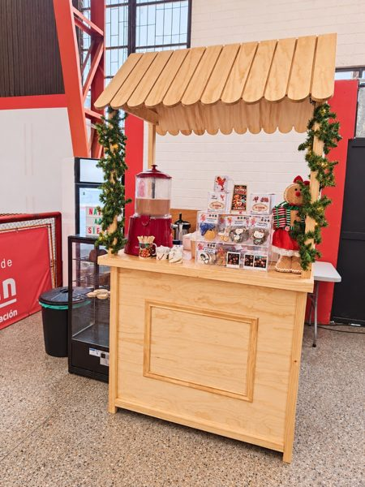
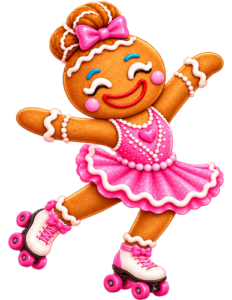

Quiénes somos
Nuestra historia
Somos La Casita de Ginger, una pastelería temática ubicada en Chillán, inspirada en las tradicionales casitas de galletita navideña y en la magia, la alegría y la calidez de la Navidad.
Nuestra propuesta nace de una idea especial: ¿por qué esperar hasta diciembre para vivir la Navidad? En nuestra casita, la Navidad está presente durante todo el año. Nuestra decoración, los detalles de cada rincón y la música navideña que acompaña a nuestros visitantes crean una atmósfera acogedora y mágica que invita a desconectarse de la rutina y volver a disfrutar de la ilusión de esta época tan especial.

En el corazón de nuestro mundo está Ginger, nuestra galletita de jengibre y personaje estrella de la marca. Ginger representa la dulzura, la alegría y el espíritu de nuestra casita. Es parte fundamental de nuestra identidad y acompaña la experiencia que queremos entregar a cada persona que nos visita.
Ofrecemos tortas, pastelería, galletas, preparaciones tradicionales chilenas y otras delicias elaboradas con dedicación, buscando sorprender con sus sabores y convertir cada ocasión en un momento especial.
En La Casita de Ginger no solo vienes a comprar algo rico: vienes a vivir una experiencia, disfrutar de un ambiente diferente y llevarte un poquito de magia navideña en cualquier época del año.
Atendemos presencialmente en nuestro local y también recibimos pedidos y consultas a través de nuestras redes sociales y WhatsApp.
Misión
Endulzar la vida de nuestros clientes a través de productos de pastelería y repostería artesanal y natural elaborados con dedicación, calidad y cariño, ofreciendo mucho más que sabores: una experiencia mágica que despierte emociones, recuerdos felices y el espíritu de compartir.
Queremos que cada persona que visite La Casita de Ginger sienta que entra a un pequeño mundo de fantasía, donde la Navidad nunca termina. A través de nuestra decoración navideña, la música característica de esta época, nuestros productos y la compañía de Ginger, nuestra querida galletita de jengibre, buscamos regalar momentos únicos, llenos de dulzura, alegría y calidez.
Visión
Convertirnos en una pastelería temática reconocida y querida en Chillán y sus alrededores, destacándonos no solo por la calidad y el sabor de nuestros productos, sino también por ofrecer una experiencia diferente, auténtica e inolvidable.
Queremos que La Casita de Ginger sea reconocida como ese lugar especial donde se puede vivir la magia de la Navidad durante los 365 días del año, un espacio que invite a las familias a compartir, disfrutar y crear recuerdos, y donde Ginger se convierta en un personaje entrañable para nuestros clientes.
Aspiramos a seguir creciendo, fortaleciendo nuestra identidad y llevando la magia de nuestra casita a más personas, tanto a través de nuestro local físico como de nuestros canales digitales.
Lo que nos hace especiales

- Concepto
- Una casita de jengibre donde la magia de la Navidad se vive durante todo el año.
- Nuestra frase
- «Donde la Navidad se vive todo el año».
- Personaje principal
- Ginger, nuestra galletita de jengibre, protagonista de nuestra identidad.
- Ambientación
- Decoración navideña permanente, detalles inspirados en las casitas de jengibre y música navideña que acompaña cada visita.
- Canales de atención
- Atención presencial en nuestro local de Chillán y pedidos por redes sociales y WhatsApp.
¿Quieres visitarnos o hacer un pedido? Revisa nuestros datos de contacto.